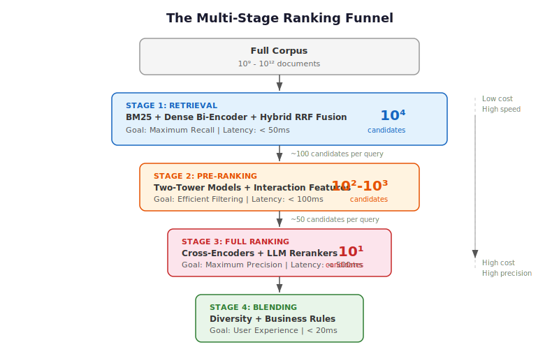
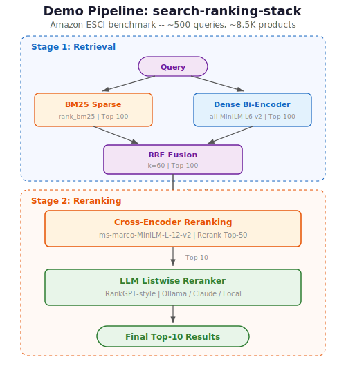
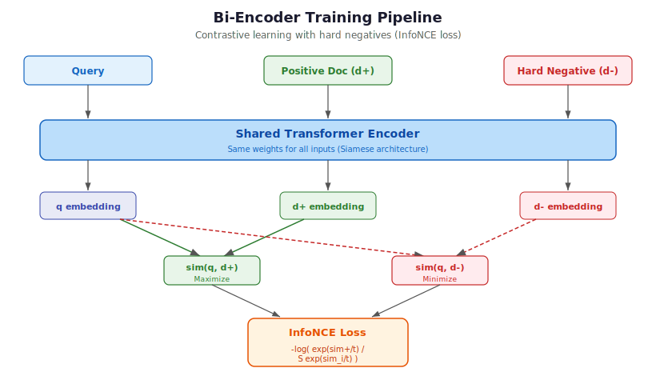
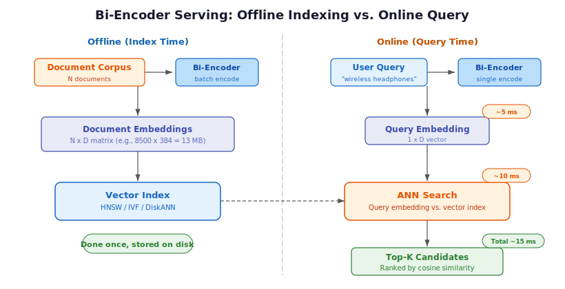
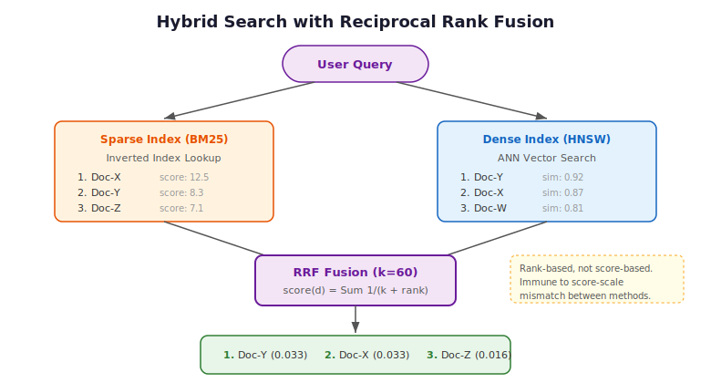
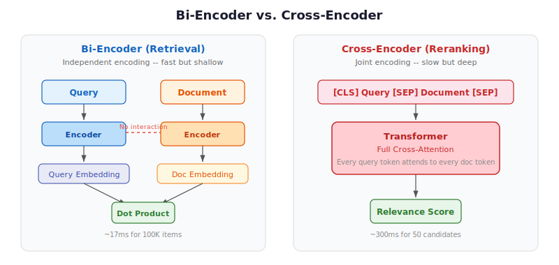
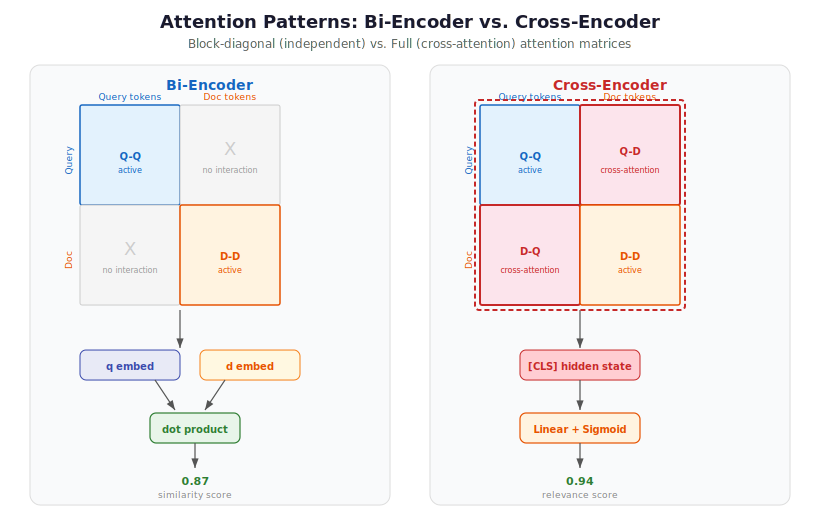
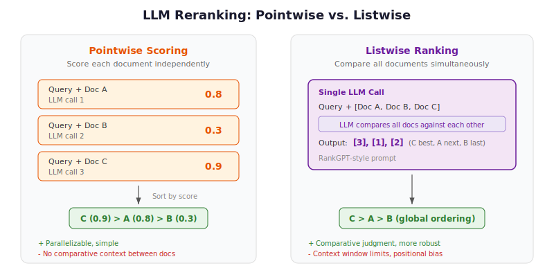
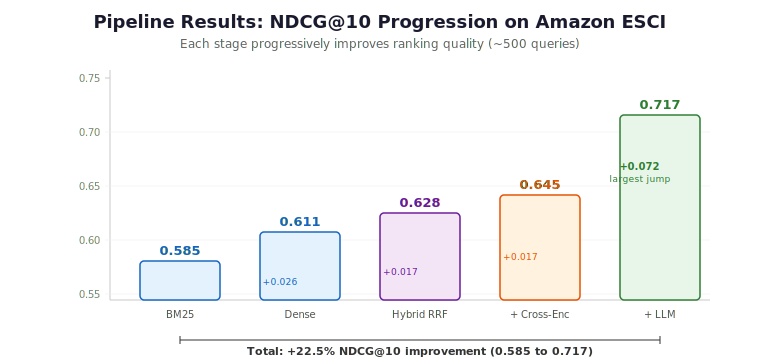
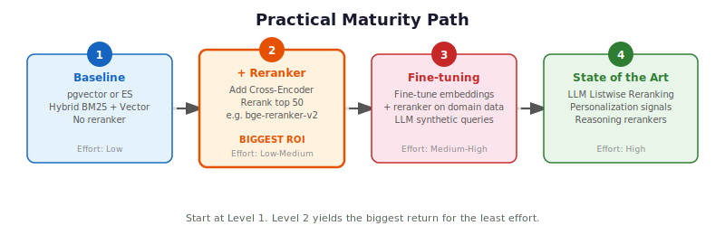

Building a Modern Search Ranking Stack: From Embeddings to LLM-Powered Relevance
Search is no longer a string-matching problem. A query for "wireless headphones" on a product search engine is not just about finding items containing those two words — it is about surfacing the best result based on semantic relevance, product quality, user preferences, and real-time availability. The gap between BM25 keyword matching and what users actually expect has forced a complete rethinking of search architecture.
This post walks through the anatomy of a modern search ranking stack: a multi-stage pipeline that combines sparse lexical retrieval, dense semantic embeddings, reciprocal rank fusion, cross-encoder reranking, and LLM-powered listwise ranking. I built a working demo that benchmarks each stage on the Amazon ESCI product search dataset — proving the value of every layer with real numbers.
TL;DR: The optimal production architecture is a multi-stage hybrid pipeline — parallel BM25 and dense retrieval fused via Reciprocal Rank Fusion, followed by cross-encoder reranking, with LLMs handling the final precision layer. On the Amazon ESCI benchmark, this pipeline delivers a 22.5% NDCG@10 improvement over BM25 alone (0.585 to 0.717), with the LLM reranker providing the single largest jump (+0.072).
The Evolution of Search Ranking
To understand why modern search stacks look the way they do, we need to trace the trajectory. Search ranking has evolved through three distinct eras, each solving a specific limitation of its predecessor.
Era 1: The Lexical Age (BM25)
For decades, BM25 was the undisputed king of retrieval. It is a probabilistic model that ranks documents based on the frequency of query terms appearing in the document, normalized by document length and inverse document frequency (IDF).
BM25 excels at exact keyword matching — searching for a specific error code, product SKU, or HTTP status code works perfectly because the system needs literal token overlap. However, it suffers from the vocabulary mismatch problem: a query for "cheap laptop" will miss documents about "budget notebook computer" if those exact words are not present. BM25 has zero understanding of semantic intent.
Despite this limitation, BM25 remains a robust baseline. It scores 0.429 average nDCG@10 across the BEIR benchmark's 18 datasets and still outperforms some neural models on argumentative retrieval tasks like Touche-2020.
Era 2: The Dense Retrieval Age (Embeddings)
The introduction of BERT and Transformer models brought Dense Retrieval. Instead of matching keywords, we map both queries and documents into a shared high-dimensional vector space (typically 768 or 1024 dimensions). Relevance becomes a calculation of cosine similarity between vectors.
The Bi-Encoder (or "Two-Tower") architecture processes the query and document independently through separate encoder towers, producing fixed-length embeddings. Document vectors can be pre-computed and indexed offline, enabling fast retrieval via Approximate Nearest Neighbor (ANN) algorithms. Now "cheap laptop" and "budget notebook" land close together in vector space.
Under the hood, bi-encoders use a Siamese architecture (Sentence-BERT, Reimers & Gurevych, EMNLP 2019): both towers share the same Transformer weights. Each tower independently processes its input text, then typically mean-pools the token-level hidden states into a single fixed-length vector (typically 384 or 768 dimensions). Weight sharing ensures that queries and documents are projected into the same semantic space — a critical requirement for cosine similarity to be meaningful.
These models are trained with contrastive learning, typically using the InfoNCE loss. Given a batch of (query, positive_document) pairs, the objective is to maximize sim(query, positive_doc) while minimizing sim(query, negative_docs) — where negatives come from other queries' positives within the same batch (in-batch negatives). A temperature parameter \(\tau\) controls the sharpness of the distribution: lower values push the model to make harder distinctions between positives and negatives.
The quality of training data is the single biggest lever for bi-encoder performance. Models start from (query, positive_document) pairs from datasets like MS MARCO, then augment with hard negatives — documents that the current model ranks highly but are actually not relevant. Random negatives are too easy and provide little learning signal; hard negatives force the model to learn subtle distinctions. The SimANS framework (Zhou et al., EMNLP 2022) formalizes this: exclude both easy negatives (too low rank) and potential false negatives (too high rank), and train on the "hard middle ground."
The trade-off? Bi-encoders compress all semantic nuance into a single fixed-size vector. This "representation bottleneck" means they often miss fine-grained interactions between specific query terms and document content.
Era 3: The Interactive Age (Cross-Encoders and LLMs)
Cross-encoders (Nogueira & Cho, 2019) feed the query and document into a Transformer simultaneously as a concatenated sequence ([CLS] Query [SEP] Document), allowing every query token to attend to every document token through the full self-attention mechanism. This deep interaction captures nuances that independent encoding cannot.
LLM Reranking takes this further: large language models now act as zero-shot listwise rankers, effectively serving as a "human judge" that can reason about why one document is better than another. RankGPT (Sun et al., EMNLP 2023 Outstanding Paper) demonstrated that GPT-4 operating as a zero-shot listwise reranker matches or exceeds supervised methods.
The precision is unmatched — but so is the computational cost. You cannot pre-compute scores, and inference is 100x slower than bi-encoder retrieval. This constraint gives rise to the defining architectural pattern of modern search: the multi-stage funnel.
Architecture: The Multi-Stage Funnel
Because we cannot run an expensive Cross-Encoder or LLM on millions of documents, modern search stacks use a hierarchical funnel architecture. Each stage acts as a filter, progressively reducing the candidate pool while increasing the model complexity.
A single-stage search is either too slow (complex models on everything) or too imprecise (simple models everywhere). The funnel is the dominant production pattern for search at scale.

| Stage | Candidate Pool | Primary Objective | Model Complexity | Latency Budget |
|---|---|---|---|---|
| Retrieval | 10^9 - 10^12 | Maximum Recall | Low (BM25, Bi-Encoders) | < 50ms |
| Pre-Ranking | 10^4 - 10^5 | Efficient Filtering | Medium (Two-Tower, GBDT) | < 100ms |
| Full Ranking | 10^2 - 10^3 | Maximum Precision | High (Cross-Encoders, LLMs) | < 500ms |
| Blending | 10^1 - 10^2 | Diversity and Safety | Rules and Multi-Objective | < 20ms |
The critical insight: retrieval sets the ceiling, reranking optimizes within it. If a relevant document does not survive the retrieval stage, no downstream model can recover it.
The Demo: A Five-Stage Pipeline
To make all of this concrete, I built a search-ranking-stack demo that implements a five-stage pipeline on the Amazon ESCI product search benchmark. Each stage is measured independently so you can see exactly where the gains come from.

The pipeline:
- BM25 Sparse Retrieval — lexical baseline (rank_bm25)
- Dense Bi-Encoder Retrieval — semantic search (all-MiniLM-L6-v2)
- Hybrid RRF Fusion — combines sparse and dense results
- Cross-Encoder Reranking — fine-grained relevance scoring (ms-marco-MiniLM-L-12-v2)
- LLM Listwise Reranking — reasoning-powered final ranking (Ollama / Claude / local)
Steps 1--3 correspond to the Retrieval stage of the funnel (maximize recall), while steps 4--5 correspond to the Full Ranking stage (maximize precision). The demo skips Pre-Ranking and Blending — at ~8,500 documents, we can afford to send all hybrid results directly to reranking.
Quick Start
git clone https://github.com/slavadubrov/search-ranking-stack.git
cd search-ranking-stack
uv sync
# Download and sample ESCI dataset (~2.5GB download, ~5MB sample)
uv run download-data
# Run the full pipeline (without LLM reranking)
uv run run-all
# Run with LLM reranking via Ollama
uv run run-all --llm-mode ollama
The Dataset: Amazon ESCI
The demo uses the Amazon Shopping Queries Dataset (ESCI) from KDD Cup 2022 — a real product search benchmark with four-level graded relevance labels:
| Label | Gain | Meaning | Example (Query: "wireless headphones") |
|---|---|---|---|
| Exact (E) | 3 | Satisfies all query requirements | Sony WH-1000XM5 Wireless Headphones |
| Substitute (S) | 2 | Functional alternative | Wired headphones with Bluetooth adapter |
| Complement (C) | 1 | Related useful item | Headphone carrying case |
| Irrelevant (I) | 0 | No meaningful relationship | USB charging cable |
Graded relevance matters because it lets us use NDCG (Normalized Discounted Cumulative Gain), which distinguishes between a "perfect" ranking and a "merely adequate" one. Binary metrics treat both as equally relevant and cannot distinguish different levels of relevance at the same position.
We sample ~500 "hard" queries (the small_version flag in ESCI) with ~8,500 products and ~12,000 judgments — small enough to run on a laptop in minutes, large enough for statistically meaningful results.
Retrieval: Hybrid Search
The retrieval layer is where the search session begins. Its job is singular: maximize recall — cast the widest net possible so that nothing relevant is missed.
BM25: The Lexical Baseline
BM25 scores documents by term overlap with the query, with term frequency saturation and document length normalization:
Where \(\text{IDF}(t)\) is the inverse document frequency of term \(t\), \(tf(t,d)\) is the term frequency in document \(d\), \(|d|\) is document length, and \(\text{avgdl}\) is the average document length across the corpus. The two key parameters are \(k_1\) (typically 1.2--2.0), which controls TF saturation — how quickly repeated terms stop adding value — and \(b\) (typically 0.75), which controls document length normalization.
The implementation is straightforward — simple whitespace tokenization with rank_bm25:
# src/search_ranking_stack/stages/s01_bm25.py
from rank_bm25 import BM25Okapi
def run_bm25(data: ESCIData, top_k: int = 100):
doc_ids = list(data.corpus.keys())
tokenized_corpus = [text.lower().split() for text in data.corpus.values()]
bm25 = BM25Okapi(tokenized_corpus)
results = {}
for query_id, query_text in data.queries.items():
scores = bm25.get_scores(query_text.lower().split())
top_indices = np.argsort(scores)[::-1][:top_k]
results[query_id] = {doc_ids[idx]: float(scores[idx]) for idx in top_indices}
return results
BM25 gives us a Recall@100 of 0.741 — meaning 74% of all relevant products appear somewhere in the top 100 results. Not bad for a purely lexical method, but 26% of relevant items are invisible to downstream stages.
Dense Bi-Encoder: Semantic Retrieval
The bi-encoder maps queries and documents independently into a shared embedding space:
# src/search_ranking_stack/stages/s02_dense.py
from sentence_transformers import SentenceTransformer
model = SentenceTransformer("sentence-transformers/all-MiniLM-L6-v2")
# Encode corpus once, cache to disk
corpus_embeddings = model.encode(
doc_texts,
batch_size=128,
normalize_embeddings=True, # Cosine sim = dot product
convert_to_numpy=True,
)
# At query time: encode query, compute dot product
query_embeddings = model.encode(query_texts, normalize_embeddings=True)
similarity_matrix = np.dot(query_embeddings, corpus_embeddings.T)
With normalized embeddings, cosine similarity reduces to a dot product — a single matrix multiplication retrieves all queries at once. The 22M-parameter all-MiniLM-L6-v2 model runs comfortably on CPU and pushes Recall@100 to 0.825, an 11% improvement over BM25.
How Bi-Encoders Learn Good Representations
Bi-encoder training typically proceeds in two phases. First, the model is pre-trained on Natural Language Inference (NLI) and Semantic Textual Similarity (STS) datasets, which teach general-purpose semantic understanding — the model learns that "a cat sits on a mat" and "a feline rests on a rug" should have similar embeddings. Second, the model is fine-tuned on retrieval-specific data like MS MARCO, where it learns that a search query and its relevant passage should be closer together than the query and irrelevant passages.
The critical ingredient in the second phase is hard negative mining. Random negatives (e.g., a document about cooking paired with a query about headphones) are trivially easy to distinguish — the model learns nothing from them. Instead, we use the current model itself to find documents it ranks highly but that are not actually relevant. The SimANS (Simple Ambiguous Negatives Sampling) approach formalizes this: given a query, rank all documents with the current bi-encoder, then exclude both easy negatives (ranked too low — the model already handles them) and potential false negatives (ranked too high — they might actually be relevant but unlabeled). The "hard middle ground" produces the maximum learning signal.
# What a training triplet looks like after hard negative mining
training_triplet = {
"query": "wireless noise canceling headphones",
"positive": "Sony WH-1000XM5 Wireless Noise Cancelling Headphones",
"negative": "Sony headphone replacement ear pads", # Hard negative: same brand, related product, but wrong intent
}
# The bi-encoder must learn that "ear pads" is NOT what the user wants,
# even though it shares many tokens with the positive document.
The contrastive loss function (InfoNCE) ties this together. For each query \(q\) with positive document \(d^+\) and a set of negative documents \(\{d^-_1, \ldots, d^-_n\}\):
Where \(\text{sim}(q, d)\) is cosine similarity between query and document embeddings, and \(\tau\) is the temperature parameter (typically 0.05--0.1) that controls the sharpness of the distribution — lower values make the loss more sensitive to hard negatives. This is essentially a softmax cross-entropy: push the positive pair's similarity up relative to all negatives. When \(\tau\) is small, even slight differences in similarity produce large gradients, forcing the model to make fine-grained distinctions.

Serving Bi-Encoder Embeddings at Scale
The key architectural advantage of bi-encoders is the clean offline/online split. All document embeddings are computed once at index time and stored in a vector index. At query time, only the query needs a single forward pass through the encoder (~5ms), followed by an ANN search over pre-computed embeddings (~10ms). This asymmetry is what makes dense retrieval practical at scale.
In our demo, the math is modest: 8,500 documents \(\times\) 384 dimensions \(\times\) 4 bytes per float = ~13 MB of embeddings. But at production scale, the numbers become serious: 1 billion documents with 768-dimensional embeddings require ~3 TiB of storage. This is where quantization (compressing 32-bit floats to 8-bit integers), product quantization (decomposing vectors into subspaces), and SSD-backed indexes like DiskANN become essential. See the Vector Indexing: HNSW vs. IVF section for details on index algorithms.

Why Hybrid: BM25 and Dense Have Complementary Failures
Neither method alone is sufficient. BM25 excels when queries contain proper nouns, specific product SKUs, or error codes — "iPhone 15 Pro Max 256GB" needs exact token matching. Dense retrieval excels when there is vocabulary mismatch — "cheap laptop" matching "budget notebook computer" requires semantic understanding.
The industry solution is Hybrid Search: run both retrieval methods in parallel, then fuse the results.
Reciprocal Rank Fusion (RRF)
The challenge with hybrid search is that BM25 and dense retrieval produce scores on entirely different scales. BM25 scores are unbounded (0 to 100+), while cosine similarity is bounded between -1 and 1. Attempting a simple linear combination requires continuous tuning.

Reciprocal Rank Fusion (Cormack et al., 2009) solves this by discarding raw scores entirely and relying purely on rank position:
Where \(k\) is a smoothing constant (typically 60) that mitigates outlier dominance. RRF gives higher priority to items consistently ranked near the top across both methods, even if one system scores it much higher than the other. This rank-based approach eliminates the scale mismatch entirely.
The implementation:
# src/search_ranking_stack/stages/s03_hybrid_rrf.py
def reciprocal_rank_fusion(ranked_lists, k=60, top_k=100):
fused_results = {}
for query_id in all_query_ids:
rrf_scores = defaultdict(float)
for results in ranked_lists:
sorted_docs = sorted(results[query_id].items(),
key=lambda x: x[1], reverse=True)
for rank, (doc_id, _score) in enumerate(sorted_docs, start=1):
rrf_scores[doc_id] += 1.0 / (k + rank)
sorted_rrf = sorted(rrf_scores.items(),
key=lambda x: x[1], reverse=True)[:top_k]
fused_results[query_id] = dict(sorted_rrf)
return fused_results
Hybrid RRF achieves Recall@100 of 0.842 and NDCG@10 of 0.628 — outperforming both BM25 (0.585) and Dense (0.611) individually. Documents only need to rank well in one method to survive fusion.
Cross-Encoder Reranking
With 100 hybrid candidates per query, we can afford to apply a more expensive model. The cross-encoder processes the query and document together through a single Transformer, with full cross-attention between all tokens.

Why Cross-Attention Matters
The fundamental difference is in the attention matrix. In a bi-encoder, attention is block-diagonal: query tokens only attend to other query tokens, and document tokens only attend to other document tokens. The two representations never interact at the token level — they meet only at the very end through a dot product. A cross-encoder computes the full attention matrix, where every query token attends to every document token (and vice versa). This cross-attention is what enables deep token-level interaction.

Consider why this matters in practice. In a bi-encoder, the query "apple" produces the same embedding every time — it is encoded independently, before any document is seen. A cross-encoder sees query and document simultaneously, resolving ambiguity in context. But the advantages go well beyond polysemy:
- Negation: A query for "headphones that are not wireless" — bi-encoder embeddings for "not wireless" are nearly identical to "wireless" because the negation barely shifts the mean-pooled vector. A cross-encoder sees the "not" token directly attending to "wireless" and correctly scores wired headphones higher.
- Qualification: A query for "laptop under $500" — the price constraint modifies relevance. A cross-encoder can attend from "$500" to the price mentioned in the product description and assess whether the constraint is satisfied.
The cross-encoder input is formatted as [CLS] query tokens [SEP] document tokens [SEP], where [CLS] is a special classification token whose final hidden state is fed through a linear classification head to produce a single relevance score. Segment embeddings distinguish which tokens belong to the query vs. the document, and [SEP] marks the boundary between segments.
How Cross-Encoders Are Trained
Cross-encoder training is conceptually simpler than bi-encoder training. The model receives (query, document, relevance_label) triples and learns to predict the label through straightforward supervised learning — no contrastive loss needed.
# Cross-encoder training data format
training_example = {
"query": "wireless headphones",
"document": "Sony WH-1000XM5 Wireless Headphones",
"label": 1.0, # Relevant
}
# Forward pass: [CLS] hidden state → Linear layer → sigmoid → score
# Loss: binary cross-entropy between predicted score and label
The classification head sits on top of the [CLS] token's final hidden state: a single linear layer maps the hidden dimension to a scalar, followed by sigmoid activation. For binary relevance labels, binary cross-entropy loss is used; for graded labels (like ESCI's four-level scale), MSE loss works better because it preserves the ordinal relationship between grades.
Hard negative mining is even more critical for cross-encoders than for bi-encoders. Because cross-encoders are expensive to train — each training example requires a full forward pass through the concatenated sequence — you cannot afford to waste compute on trivially easy negatives. The practical approach: use a bi-encoder to retrieve the top-K candidates for each training query, then select hard negatives from specific rank ranges (e.g., ranks 10-100). This gives the cross-encoder training examples where the distinction between relevant and irrelevant actually requires deep token interaction to resolve.
# src/search_ranking_stack/stages/s04_cross_encoder.py
from sentence_transformers import CrossEncoder
model = CrossEncoder("cross-encoder/ms-marco-MiniLM-L-12-v2")
def run_cross_encoder(data, hybrid_results, top_k_rerank=50):
for query_id, query_text in data.queries.items():
candidates = list(hybrid_results[query_id].items())[:top_k_rerank]
# Form (query, document) pairs for joint encoding
pairs = []
doc_ids = []
for doc_id, _ in candidates:
doc_text = data.corpus.get(doc_id, "")[:2048]
pairs.append([query_text, doc_text])
doc_ids.append(doc_id)
# Score all pairs with full cross-attention
scores = model.predict(pairs, batch_size=64)
# Rerank by cross-encoder score
scored_docs = sorted(zip(doc_ids, scores),
key=lambda x: x[1], reverse=True)
reranked_results[query_id] = {
doc_id: float(score) for doc_id, score in scored_docs
}
The 33M-parameter ms-marco-MiniLM-L-12-v2 model averages about 100ms per query on CPU for 50 candidates. NDCG@10 jumps to 0.645 — a solid +0.017 improvement over hybrid retrieval.
The Speed-Quality Tradeoff
Why can't we just use cross-encoders for everything? The fundamental issue is that pre-computation is impossible. Unlike bi-encoders, where each document embedding is query-independent and can be computed once and stored, a cross-encoder's output depends on both the query and the document together. The relevance score for "wireless headphones" paired with a Sony product is computed from the full cross-attention between those specific tokens — it cannot be cached or reused for a different query.
The computational cost difference is stark. A bi-encoder retrieval requires 1 forward pass (to encode the query) plus N dot products (to compare against pre-computed document embeddings) — the dot products are trivially cheap. A cross-encoder requires N full Transformer forward passes, each processing the concatenated query + document sequence at \(O(L^2)\) cost for combined sequence length \(L\). For 50 candidates with an average combined length of 128 tokens, that is 50 separate forward passes through 12 Transformer layers. For 100,000 candidates, it becomes computationally catastrophic (on the order of minutes on a modern GPU vs. ~17ms for a bi-encoder).
Note the fundamental rule confirmed by our results: Recall@100 stays flat at 0.842 through both reranking stages. Reranking can reorder results but never add documents. The retrieval stage sets the ceiling.
LLM Listwise Reranking
The final stage uses an LLM to perform listwise reranking. Instead of scoring each document independently (pointwise), the LLM sees all top-10 results at once and outputs a complete ranking. This approach, inspired by RankGPT, enables the model to compare products against each other — something pointwise models cannot do.

The Listwise Prompt
The prompt template asks the LLM to consider the ESCI relevance hierarchy:
# src/search_ranking_stack/stages/s05_llm_rerank.py
def _create_listwise_prompt(query, documents, max_words=200):
n = len(documents)
doc_texts = []
for i, (doc_id, doc_text) in enumerate(documents, start=1):
words = doc_text.split()[:max_words]
doc_texts.append(f"[{i}] {' '.join(words)}")
return (
f"I will provide you with {n} product listings, each indicated by "
f"a numerical identifier [1] to [{n}]. Rank the products based on "
f'their relevance to the search query: "{query}"\n\n'
"Consider:\n"
"- Exact matches should rank highest\n"
"- Substitutes should rank above complements\n"
"- Irrelevant products should rank lowest\n\n"
f"{chr(10).join(doc_texts)}\n\n"
"Output ONLY a comma-separated list of identifiers: [3], [1], [2], ...\n"
"Do not explain your reasoning."
)
Three Execution Modes
The demo supports three backends for LLM reranking:
| Mode | Model | How It Runs |
|---|---|---|
ollama |
llama3.2:3b (configurable) |
Local via Ollama API |
api |
claude-haiku-4-5-20251001 |
Anthropic API |
local |
Qwen/Qwen2.5-1.5B-Instruct |
HuggingFace Transformers |
Parsing and Fallback
LLM outputs are non-deterministic, so robust parsing and fallback logic are essential:
def _parse_ranking(output: str, n: int) -> list[int] | None:
"""Parse LLM output to extract ranking order."""
matches = re.findall(r"\[(\d+)\]", output)
if not matches:
return None
positions = [int(m) - 1 for m in matches]
# Pad with remaining positions if LLM returned partial output
if len(positions) < n:
seen = set(positions)
for i in range(n):
if i not in seen:
positions.append(i)
return positions[:n]
If parsing fails entirely, the system falls back to the cross-encoder ordering. This fallback-first design is essential for any production LLM integration — you should never let a parsing failure degrade results below the previous stage.
Results: Every Stage Earns Its Keep
Here are the results from running the full pipeline on ~500 ESCI queries:

| Stage | NDCG@10 | MRR@10 | Recall@100 | NDCG Delta |
|---|---|---|---|---|
| BM25 | 0.585 | 0.812 | 0.741 | -- |
| Dense Bi-Encoder | 0.611 | 0.808 | 0.825 | +0.026 |
| Hybrid (RRF) | 0.628 | 0.834 | 0.842 | +0.017 |
| + Cross-Encoder | 0.645 | 0.860 | 0.842 | +0.017 |
| + LLM Reranker | 0.717 | 0.901 | 0.842 | +0.072 |
Key Observations
Hybrid search outperforms either method alone. RRF NDCG (0.628) exceeds the maximum of BM25 (0.585) and Dense (0.611). This is the core thesis of modern search: sparse and dense retrieval have complementary failure modes, and combining them recovers documents that would be missed by either method individually.
Recall is set at retrieval. Recall@100 stays flat at 0.842 through both reranking stages. This confirms the fundamental rule: rerankers can reorder but never add documents. If you want higher recall, you must improve the retrieval layer.
The LLM reranker provides the largest single jump. The +0.072 NDCG@10 gain from cross-encoder to LLM reranker is the biggest single-stage improvement in the pipeline. The LLM's ability to reason about product relevance — understanding that a "wireless headphone stand" is a complement, not a match — provides discrimination that statistical models miss.
Dense beats BM25 on this dataset. ESCI's product search domain has severe vocabulary mismatch (users say "cheap laptop"; products say "budget notebook computer"), which favors semantic retrieval.
Evaluation: Measuring What Matters
The demo uses three complementary metrics that together tell the full story:
NDCG@10 (Primary Metric)
Normalized Discounted Cumulative Gain measures the quality of the top-10 ranking using graded relevance. It rewards placing highly relevant documents near the top with a logarithmic discount:
NDCG is the only metric that fully exploits ESCI's four-level graded relevance — a system that places an Exact match at position 1 scores higher than one that places a Substitute there. This is why it is the primary metric for holistic search quality.
MRR@10 (User Experience)
Mean Reciprocal Rank measures how quickly the user finds the first relevant result. If the first relevant result is at position 1, MRR = 1.0. At position 3, the reciprocal rank is 0.333. This captures "time to satisfaction" — even if NDCG is high, users care most about the first good result.
Recall@100 (Retrieval Coverage)
Recall measures what fraction of all relevant documents appear somewhere in the top-100. This is a ceiling metric — if a relevant document is not retrieved, no reranker can fix it.
Vector Indexing: HNSW vs. IVF
The practical utility of dense embeddings depends on Approximate Nearest Neighbor (ANN) indexing. The demo uses brute-force cosine similarity (practical at ~8,500 documents), but production systems need specialized indexes.
HNSW (Hierarchical Navigable Small World)
HNSW (Malkov & Yashunin, 2016) is the gold standard for production environments requiring sub-100ms latency. It builds a multi-layered graph where upper layers provide "express" connections for coarse navigation and lower layers provide dense connections for precise refinement. Key tuning parameters are M (connections per node, typically 16-64) and efSearch (query-time beam width — use at least 512 for recall targets above 0.95).
HNSW's weakness is the "Tombstone Problem": when records are deleted, they leave phantom nodes in the graph. Over time, these create unreachable regions, effectively blinding your search engine to sections of data. This is not a theoretical concern — even modern vector databases like Qdrant, which uses HNSW exclusively, report degraded search quality after heavy deletions that requires full index rebuilds to resolve. If your dataset has frequent updates or deletions, plan for periodic reindexing or consider IVF-based alternatives.
IVF (Inverted File)
IVF indexes partition the vector space into Voronoi cells using k-means clustering. At query time, only the nprobe clusters closest to the query centroid are scanned. IVF is more memory-efficient and resilient to dynamic datasets — deletions are clean, with no unreachable nodes. Build times are 4x-32x faster than HNSW.
For extreme scale, IVF_RaBitQ (Gao & Long, SIGMOD 2024) compresses floating-point vectors into single-bit representations. In high-dimensional space, a coordinate's sign (+/-) captures sufficient angular information for similarity computation.
| Feature | HNSW (Graph) | IVF (Cluster) |
|---|---|---|
| Query Speed | Exceptional | Moderate |
| Build Speed | Slow | Fast (4x-32x faster) |
| Memory | High (RAM-bound) | Low |
| Deletions | Problematic (tombstones) | Clean |
| Best For | Static, latency-critical | Dynamic, memory-constrained |
Practical guidance from Uber: They optimized ANN retrieval by reducing the shard-level search parameter K from 1,200 to 200, achieving a 34% latency reduction and 17% CPU savings with minimal impact on recall.
The LLM Layer: Beyond Reranking
LLMs are not just improving the reranking stage — they are transforming the entire search pipeline.
Query Understanding
LLM-powered query expansion and rewriting addresses vocabulary mismatch before retrieval even begins. Query2doc (Wang et al., EMNLP 2023) generates pseudo-documents via few-shot LLM prompting and concatenates them with original queries, yielding 3-15% BM25 improvement on MS MARCO without any fine-tuning. The LLM "fills in" vocabulary that the user's terse query omits.
Practical patterns include abbreviation expansion, entity enrichment, sub-query decomposition for multi-hop reasoning, and RAG-Fusion — generating multiple query variants and combining results via RRF.
LLM-as-a-Judge for Evaluation
LLMs are becoming the standard for search quality assessment. The TALEC framework achieves over 80% correlation with human judgments using domain-specific evaluation criteria. Pinterest's approach is instructive: Llama-3-8B serves as an offline teacher model that generates five-scale relevance labels on billions of search impressions, outperforming multilingual BERT-base by 12.5% in accuracy; these labels are then distilled into lightweight production models.
Key techniques for reliable LLM evaluation:
- Prompt models to explain their ratings (significantly improves human alignment)
- Use panels of diverse models to reduce variability ("replacing judges with juries")
- Account for central tendency bias in LLM-generated labels
Knowledge Distillation
Running a full LLM for every query is prohibitively expensive. The solution is knowledge distillation:
- Use a powerful LLM (the teacher) to rerank thousands of training queries
- Train a small, fast cross-encoder (the student, ~100M-200M parameters) to mimic the LLM's ranking distribution
- Result: near-LLM performance with ~10ms latency
InRanker distills MonoT5-3B into 60M and 220M parameter models — a 50x size reduction with competitive performance. The Rank-Without-GPT approach produces 7B open-source listwise rerankers that achieve 97% of GPT-4 effectiveness using QLoRA fine-tuning.
A cost optimization insight from ZeroEntropy: reranking 75 candidates and sending only the top 20 to GPT-4o reduces API costs by 72% — from $162K/day to $44K/day at 10 QPS — while preserving 95% of answer accuracy.
Personalization: Who Is Searching Matters
Generic relevance is no longer enough. A search for "apple" should return iPhones for a tech enthusiast and apple recipes for someone who has been browsing cooking content.
Two-Tower Models for Personalization
The dominant retrieval architecture for personalization uses a two-tower embedding model: the query tower encodes search queries plus user profile into embeddings; the item tower encodes items plus metadata. Dot-product similarity determines relevance, enabling sub-100ms ANN retrieval.
Airbnb pioneered listing embeddings using Word2Vec-style training on click sessions — their Search and Similar Listings channels together drive 99% of booking conversions. Pinterest's OmniSearchSage (WWW 2024) jointly learns unified query, pin, and product embeddings, producing >8% relevance improvement at 300K requests/second. Uber's Two-Tower Embeddings power Eats Homefeed retrieval in ~100ms.
Position Bias: The Silent Distortion
Users click higher-ranked items regardless of true relevance, creating a self-reinforcing feedback loop. The most practical production approach (PAL, Guo et al., RecSys 2019): include position as a training feature, then set position=1 for all items at serving time. This effectively debiases the model without requiring knowledge of the click model.
Bridging the Domain Gap
A common failure in search strategy is assuming a model trained on general web data (like MS MARCO) will perform on specialized domains. This is the Out-of-Domain (OOD) problem.
Synthetic Data Generation
LLMs solve the labeled data scarcity problem through Generative Pseudo-Labeling (GPL, InPars):
- Take your domain-specific document corpus
- Prompt an LLM to "Generate a search query that this document would answer"
- Use these synthetic (Query, Document) pairs to fine-tune your retriever and reranker
This technique has shown dramatic improvements on domain-specific tasks where real user queries are scarce. It is the practical bridge between Level 2 and Level 3 on the maturity path.
RMSC: Soft Tokens for Domain Adaptation
The RMSC (Robust Multi-Supervision Combining) strategy introduces soft tokens — special domain tokens [S1], [T1] and relevance tokens [H1], [W1] — that explicitly signal to the model what domain it is processing and how confident the supervision signal is. By training with these tokens, the model stores domain-specific knowledge in the token embeddings rather than overwriting core backbone parameters.
The Practical Maturity Path
If you are building this stack today, do not start with the most complex architecture. Follow this maturity curve:

Level 1 (Baseline): Postgres pgvector or Elasticsearch. Hybrid search with BM25 + vector retrieval. No reranker.
Level 2 (The Reranker): Add a cross-encoder (e.g., bge-reranker-v2-m3 or ms-marco-MiniLM-L-12-v2) to rerank the top 50 results. This typically yields the biggest ROI for the least effort. The Elastic Rerank model (184M parameters, DeBERTa v3) reaches 0.565 average nDCG@10 on BEIR — a 39% improvement over BM25.
Level 3 (Fine-tuning): Fine-tune your embedding model and reranker on domain data using LLM-generated synthetic queries (GPL/InPars). This is where domain-specific performance really separates from generic models.
Level 4 (State of the Art): Implement listwise LLM reranking for the top 5-10 results and inject personalization signals. Experiment with reasoning-based rerankers like Rank1, which generates explicit reasoning chains before making relevance judgments.
Level 2 is the sweet spot for most teams. Adding a cross-encoder reranker to an existing hybrid search setup can dramatically improve precision without architectural overhaul.
The Frontier: Reasoning Rerankers and Agentic Search
Two patterns define where search is heading.
Reasoning-Based Rerankers
Rank1 trains reranking models to generate explicit reasoning chains before making relevance judgments, inspired by DeepSeek-R1 and OpenAI o1. It distills from 600,000+ reasoning trace examples and achieves state-of-the-art on the BRIGHT reasoning benchmark — sometimes 2x improvement over same-sized rerankers. Remarkably, Rank1-0.5B performs comparably to RankLLaMA-13B despite being 25x smaller.
The practical implication: reasoning-heavy queries (legal research, scientific literature, complex product search) will benefit enormously from test-time compute scaling in rerankers.
Agentic Search
Search-o1 (EMNLP 2025) enables reasoning models (specifically QwQ-32B) to autonomously generate search queries when they encounter uncertain knowledge mid-reasoning, achieving 23.2% average exact match improvement over standard RAG on multi-hop QA benchmarks. The pattern is clear: search is becoming a tool that AI agents invoke dynamically rather than a standalone product.
Key Takeaways
-
Hybrid search is no longer optional. The empirical evidence across benchmarks and production systems is definitive. Every major vector database now supports it natively. Our demo shows RRF NDCG (0.628) exceeding both BM25 (0.585) and Dense (0.611).
-
Retrieval sets the ceiling; reranking optimizes within it. Recall@100 stays flat at 0.842 through both reranking stages. Invest in retrieval quality first.
-
Adding a cross-encoder is the highest-ROI single change for most teams. Even a small cross-encoder reranking 50 documents delivers significant NDCG uplift. Start here.
-
LLM listwise reranking provides the largest single quality jump (+0.072 NDCG@10 in our demo), but at the cost of latency and compute. Use it selectively for the final top-10.
-
Knowledge distillation is making LLM-quality reranking practical. Frontier model capabilities are being compressed into deployable sizes within months. A 7B model can achieve 97% of GPT-4 reranking effectiveness.
-
The stack, not the model, determines production quality. Optimize the pipeline — the interplay between retrieval, fusion, and reranking — not just any single component.
The complete pipeline code is available at github.com/slavadubrov/search-ranking-stack. Clone it, run it, experiment with different models and parameters, and see the numbers for yourself.
References
Papers
- Reciprocal Rank Fusion — Cormack et al., 2009
- RankGPT: LLMs as Zero-Shot Listwise Rerankers — Sun et al., EMNLP 2023 Outstanding Paper
- Rank1: Reasoning-Based Reranking — Weller et al., COLM 2025
- SCaLR: Self-Calibrated Listwise Reranking — Self-calibrating listwise reranking framework
- GCCP: Global-Consistent Comparative Pointwise — Addressing calibration in pointwise LLM ranking
- Rank-DistiLLM: Knowledge Distillation for Reranking — Schlatt et al., ECIR 2025
- Query2doc: LLM Query Expansion — Wang et al., EMNLP 2023
- GPL: Generative Pseudo Labeling — Domain adaptation for dense retrieval
- InRanker: Distilled Reranker — 50x size reduction with competitive performance
- Search-o1: Agentic Retrieval — EMNLP 2025
- TALEC: LLM-as-a-Judge for Search — Evaluation framework
- RMSC: Soft Tokens for Domain Adaptation — Multi-supervision combining
- BEIR Benchmark — Thakur et al., NeurIPS 2021
- Sentence-BERT — Reimers & Gurevych, EMNLP 2019
- InfoNCE / CPC — van den Oord et al., 2018
- SimANS: Hard Negative Sampling — Zhou et al., EMNLP 2022
- Passage Reranking with BERT — Nogueira & Cho, 2019
- HNSW — Malkov & Yashunin, 2016
- DiskANN — Subramanya et al., NeurIPS 2019
- RaBitQ — Gao & Long, SIGMOD 2024
- Replacing Judges with Juries — Verga et al., 2024
- RAG-Fusion — Rackauckas, 2024
- InPars — Bonifacio et al., SIGIR 2022
- BRIGHT Benchmark — Su et al., ICLR 2025
- Rank-without-GPT — Zhang et al., ECIR 2025
- Pinterest LLM Search Relevance — Wang et al., 2024
- OmniSearchSage — Agarwal et al., WWW 2024
- PAL: Position-bias Aware Learning — Guo et al., RecSys 2019
Datasets and Benchmarks
- Amazon ESCI: Shopping Queries Dataset — KDD Cup 2022
- BEIR: Benchmarking IR — Heterogeneous benchmark for zero-shot evaluation
- MTEB: Massive Text Embedding Benchmark — Embedding model leaderboard
- ESCI Paper — Reddy et al., 2022
Models Used in the Demo
- all-MiniLM-L6-v2 — 22M parameter bi-encoder
- ms-marco-MiniLM-L-12-v2 — 33M parameter cross-encoder
- Sentence-Transformers — Neural retrieval model framework
Tools and Platforms
- rank_bm25 — BM25 implementation in Python
- pytrec_eval — TREC evaluation toolkit
- Elasticsearch — Hybrid search with Retrievers API
- Vespa — Unified search and recommendation engine
- Weaviate — Vector database with hybrid search
- Qdrant — Vector database with multi-stage queries
Industry References
- Airbnb Listing Embeddings — Grbovic & Cheng, KDD 2018
- Uber Delivery Search — Uber Engineering, 2025
- Uber Two-Tower Embeddings — Uber Engineering, 2023
- Elastic Rerank — Elastic, 2024
- ZeroEntropy Reranking Guide — ZeroEntropy, 2025
Demo Project
- search-ranking-stack — Working demo with all code from this post